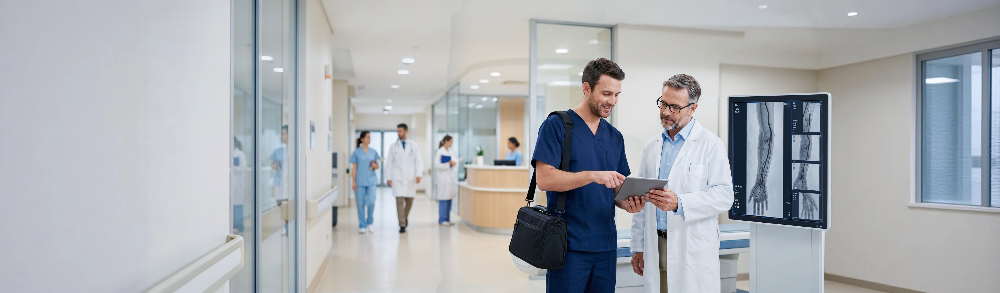

以患者为中心、以临床为导向，构建覆盖术前、术中、术后全周期的专业服务体系
围绕血管介入全流程，提供专业、高效、可信赖的全方位服务支持
配备专业临床应用工程师，为复杂手术提供全程跟台技术支持，确保器械精准使用。
覆盖全国主要省市的服务网点，实现快速响应与就近支持。
系统化产品培训体系，帮助医护人员熟练掌握器械操作与临床应用。
完善的售后服务体系，确保每一台器械都得到专业维护与保障。
搭建学术交流平台，推动血管介入领域的临床研究与技术进步。
严格遵循医疗器械法规要求，提供全流程合规支持与质量保障。
从需求对接至术后随访，全流程标准化服务，确保每一个环节专业高效
了解临床需求与手术方案，确认器械配置
器械调配、运输、消毒，术前技术交底
专业工程师跟台，实时技术保障
器械使用反馈收集，不良事件监测
数据分析与产品迭代，服务质量提升
全国布局的服务网络，为每一位客户提供快速、专业、就近的服务支持
7×24 小时服务承诺——全国服务热线全天候待命，紧急需求 2 小时内响应，48 小时内工程师到达现场。
以严苛的质量标准贯穿研发、生产、流通全链路，为临床与患者提供安全可靠的产品保障
全面通过 ISO13485 医疗器械质量管理体系认证，建立覆盖设计开发、生产制造、储运流通的全流程质量管控体系。
建成独立完善的 GMP 万级净化生产区，严格控制生产环境洁净度，确保每一件产品都符合无菌医疗器械标准。
具备国家三类医疗器械设计开发与生产制造资质，核心产品均已取得医疗器械注册证与生产许可证。
建立完善的产品唯一标识（UDI）追溯系统，实现从原材料到临床使用的全生命周期质量可追溯。
专业的临床应用工程师团队，为每一台手术提供精准、及时、全方位的技术保障
基于患者影像数据与手术方案，协助临床团队完成器械选型、尺寸测量与术前预案制定。
资深临床应用工程师全程跟台，实时提供器械操作指导与技术配合，保障手术顺利进行。
术后定期回访，收集器械使用反馈与临床数据，为产品优化与临床应用提供循证依据。
7×24 小时技术热线待命，紧急需求 2 小时内响应，48 小时内工程师到达现场支持。
建立高效的客户反馈闭环，持续倾听临床声音，驱动服务质量与产品体验不断升级
400-XXX-XXXX · 7×24 小时
service@chuangxin-med.com
官网在线咨询 · 工作日 9:00-18:00
专业的服务团队，完善的服务网络，期待与您携手，为更多患者带来希望。
专业服务 · 快速响应